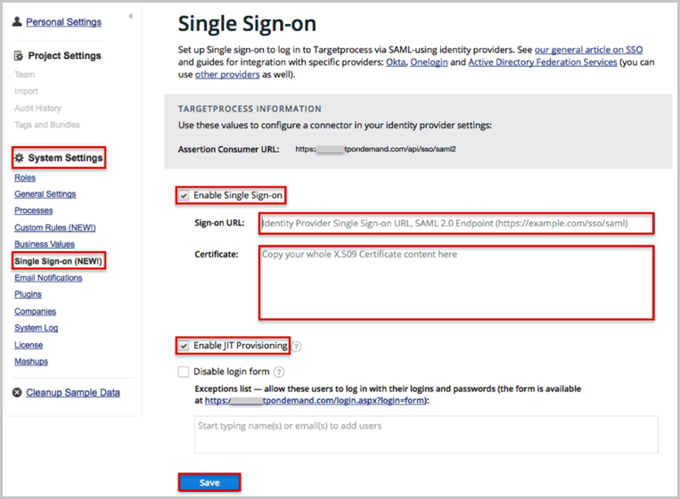
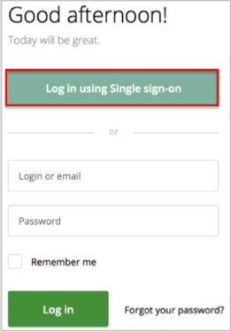

Log in to Targetprocess as an administrator.
Navigate to System Settings > Single Sign-on, then enter the following (see screen shot at end of step for reference):
Check the Enable Single Sign-on box.
Sign-on URL: Copy and paste the following:
Sign into the Okta Admin Dashboard to generate this variable.
Certificate: Copy and paste the following x.509 certificate:
Sign into the Okta Admin Dashboard to generate this variable.
Check the Enable JIT Provisioning box, if necessary.
Click Save.

Done!
Notes:
IdP-initiated flows, SP-initiated flows, and Just In Time (JIT) provisioning are all supported.
For SP-initiated flows:
Go to https://[yourSubDomain].tpondemand.com/login.aspx.
Click the Log in using Single sign-on button:
